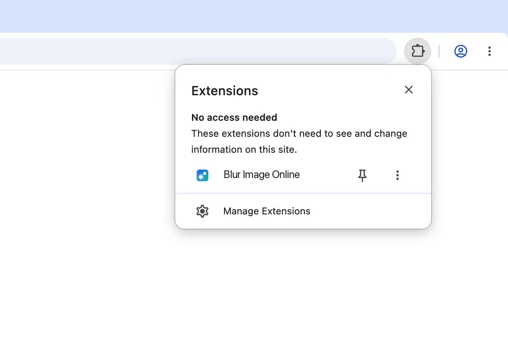
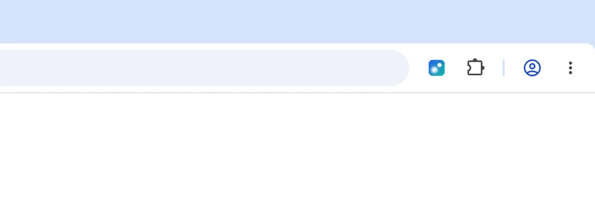

Installed
Thanks for installing Blur Image Online
Pin it to the toolbar first, so the editor is always one click away.
- Click the puzzle piece in the top right of Chrome.
- Click the pin next to Blur Image Online.

Open the extension (3). The editor opens in its own tab, not as a popup:

Drag a photo in, paste it, or choose a file. Paint with the brush or draw a box, pick blur, pixelate, or a black box, then save. More detail is on Help.